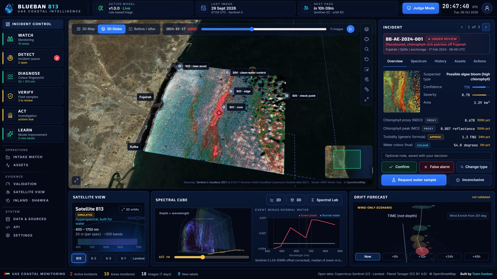
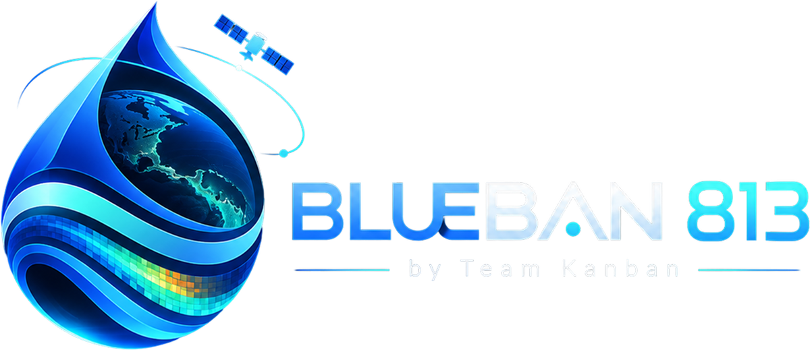
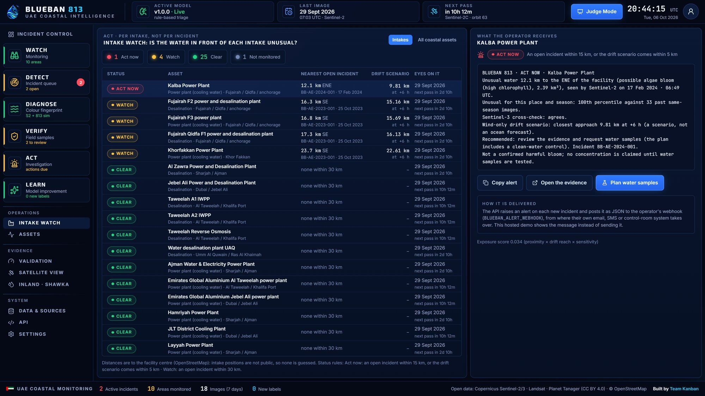
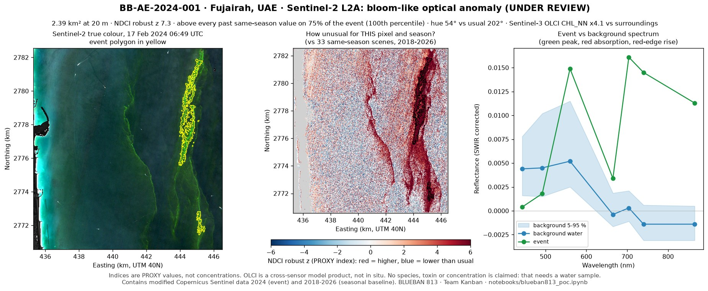
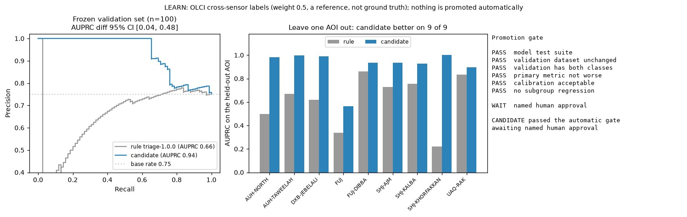
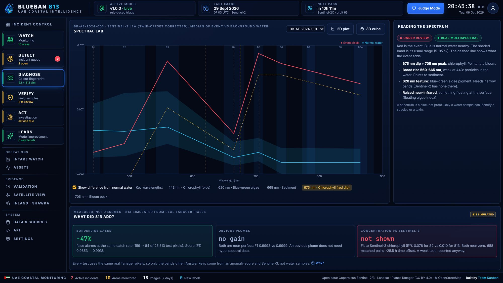

Satellites flag water that is unusual for that exact place and season. A person decides, a field team confirms, and the model learns, going live only when it provably improves.
Live: blueban813.kanbanstudios.ae · Code: github.com/4waiz/BlueBan-813
Today the warning comes from the intake filters, a boat sample on a fixed calendar, or a complaint from the public: after the water has arrived.
Decide: step up pre-treatment, prepare the intake, send a boat?
Today: filters and lab results, after the fact.
Decide: where to sample today, what to report, when to warn a beach.
Today: a fixed sampling calendar and public reports.
Decide: protect stock, pause works, close a beach.
Today: what can be seen from the shore.
We screen UAE coastal waters and the Shawka Dam reservoir for unusual water colour, on every Sentinel-2 pass since 2017, so that desalination operators and environment regulators can decide whether, where and what to sample before the water reaches an intake.
| Boat samples on a fixed calendar | → | Extra sampling only where the evidence is, always with a clean-water control |
| "Is this normal?" answered from memory | → | Answered from years of images of that exact spot and season |
| A conclusion in an email | → | A decision with its evidence, model version and a tamper-evident log |
Sentinel-2 L2A over 10 UAE coastal areas and one inland dam, every pass.
Each pixel against its own same-season history, not its neighbours.
Colour fingerprint, Sentinel-3 same-morning check, Satellite 813 simulated.
A named analyst decides. A field team takes water samples.
Intake watch, alerts, a sampling plan with a clean-water control.
Verified labels train a candidate that must pass a frozen test and a person's sign-off.
| Dataset | Provider · level | Dates | Role in BLUEBAN |
|---|---|---|---|
| Sentinel-2 MSI L2A | ESA Copernicus via Planetary Computer · surface reflectance, 10–20 m | 2017–2026 · 5,080 images | Detection, the primary sensor |
| Sentinel-3 OLCI WFR | EUMETSAT / ESA Copernicus · Level-2 water, 300 m | 2017 – Feb 2026 | Same-morning cross-check; 436 reference labels, never ground truth |
| Planet Tanager-1 | Planet open archive (CC BY 4.0) · surface reflectance, >420 bands, 35 m | 1 Jun 2025 scene | Real pixels → simulated 813 bands; the 813 test |
| EnMAP HSI L2A | DLR · L2A surface reflectance, 224 bands, 30 m | 8 Sep 2022, 24 Apr 2024 | Inland: Shawka Dam water and anomalies; 813 simulated on EnMAP |
| Landsat 8/9 + Sentinel-2 | USGS, ESA · 30 m / 20 m | Sep 2023 – Oct 2025 | Inland baseline, 28 images |
| ERA5 10 m wind | ECMWF / Copernicus C3S | Per event | Wind-only drift scenario (not an ocean forecast) |
| OpenStreetMap | OSM contributors (ODbL) | 2026 extract | 120 coastal assets, incl. 8 desalination and 22 power plants |
SIMULATED Satellite 813 data was not available to teams in the PoC phase, so its published band set (~205 bands, 400–1700 nm, 20 m) is simulated from real hyperspectral pixels and labelled as simulated everywhere.
Sentinel-2 L2A with each product's BOA offset, SCL cloud and shadow masks, a glint-aware water mask, 20 m grid.
NDCI, MCI red-edge peak, hue angle, turbidity (generic formula). Shown as proxies, never as concentrations.
Robust z and seasonal percentile vs the same pixel ±45 days in other years. Flag: z ≥ 3, ≥ 95th percentile, ≥ 0.5 km².
Event vs background spectrum, Sentinel-3 the same morning, simulated 813 bands.
L2 logistic candidate vs the rule on a frozen test set, bootstrap intervals, a person approves.
Train and test split by area and month; 1.2 km spatial blocks for the 813 test.
Known false alarms stay in the data on purpose: the system must stand down.
Python and the in-browser trainer agree to 1e-7; CI runs the whole loop.
A notebook reruns the Fujairah detection and the gate from committed sample data.
The event, mapped. 17 Feb 2024 true colour and the anomaly off Fujairah, with a five-point sampling plan.
Evidence, then a decision. Proxies vs past years, Sentinel-3 agreement; Confirm, False alarm or Request a water sample.
Fingerprint and drift. The spectral cube, event-minus-normal spectrum and a wind-only drift scenario.
Live at blueban813.kanbanstudios.ae: review, sampling, retraining and gated promotion all run in the browser. The FastAPI backend runs the same loop on a database, with an HTTP API.

Status rules are fixed and shown on screen. Alerts go out as JSON to the operator's webhook, then email, SMS or the control room.

Sentinel-2A, 06:49 UTC · 2.39 km², 8 km offshore · rerun from notebooks/blueban813_poc.ipynb on the committed sample input. No species, toxin or concentration is claimed without a water sample.


Reference: a full-spectrum (368-band) anomaly detector, not field data. Every 813 value is simulated and labelled so; the reader for real 813 products is already written and tested.
| Index maps and satellite viewers | → | A picture with no baseline: a turbid harbour looks alarming every clear day. BLUEBAN judges each pixel against its own past. |
| Scheduled boat sampling | → | Accurate, but one point on a fixed date. BLUEBAN decides where and when the next sample resolves something. |
| Black-box detection models | → | BLUEBAN shows its evidence, logs every decision, and promotes a model only after a frozen test and a person's sign-off. |
The screening pipeline and operator screens, next to the data GIQ hosts.
Swap the simulator for the real 813 reader the day products arrive.
Compare our flags with one operator's lab record for a season; calibrate concentrations from their samples.
Earth-observation processing · machine learning and validation · full-stack web, 3D and API · product